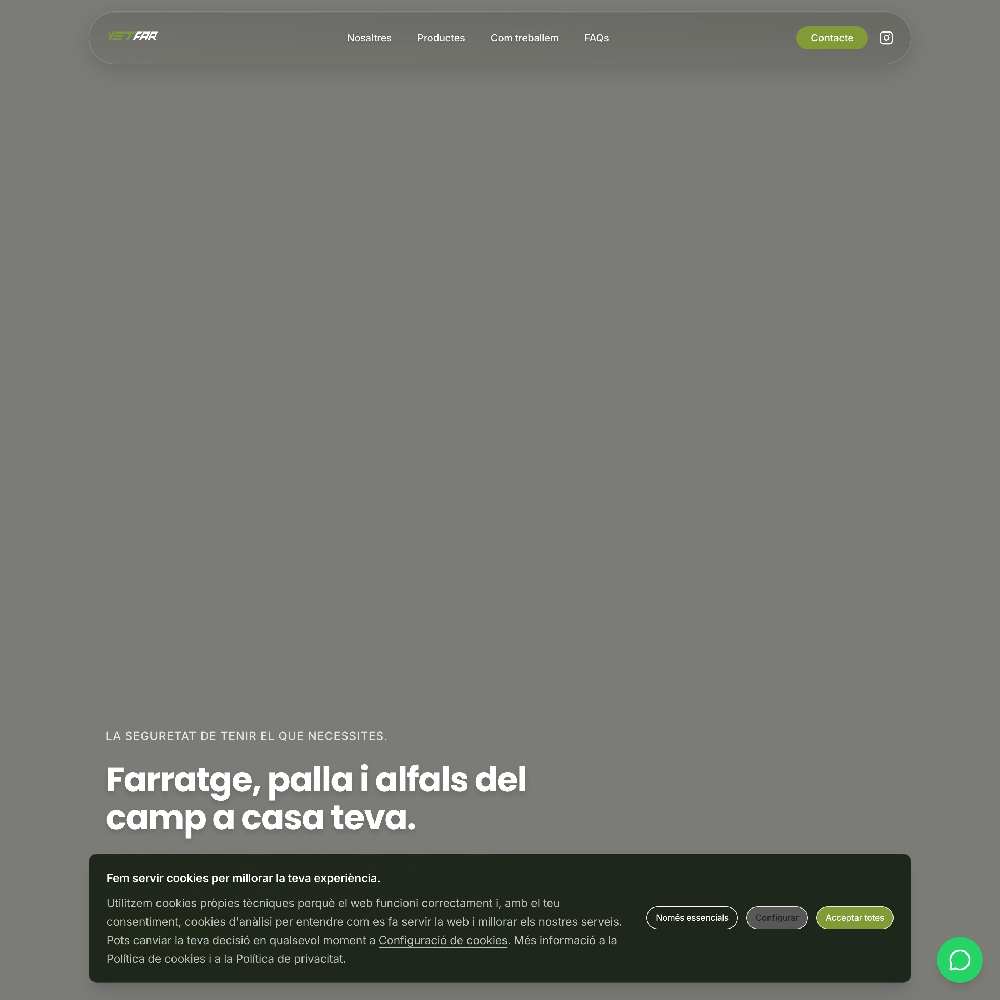
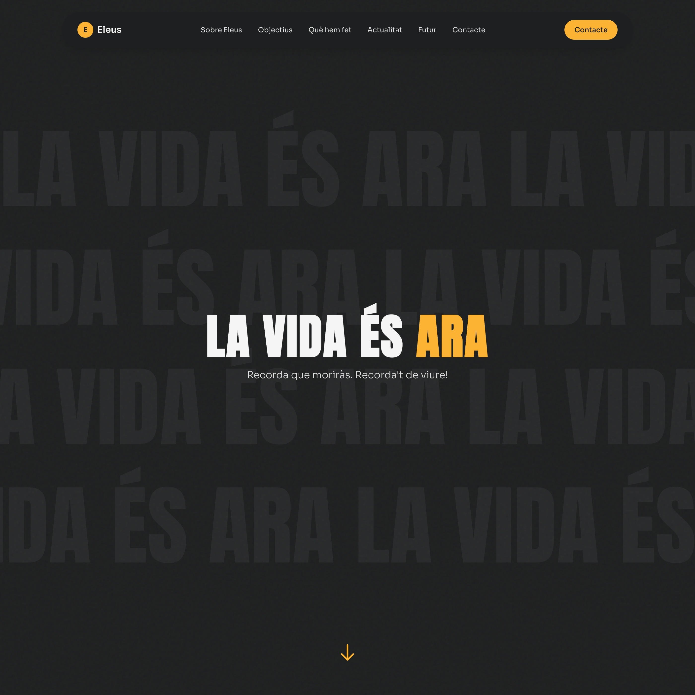

Vetfar
Farratge · One Page
One Page per a una empresa de farratge, palla i alfals. Estructura clara de productes, procés de compra i contacte directe per demanar pressupost a Catalunya.
Visitar web
Cada projecte parteix d'un negoci diferent i necessita una solució diferent.
Dissenyem webs a mida per a projectes de sectors molt diversos, sempre partint dels seus objectius, públic i manera de comunicar-se.
Des de Girona, el portfolio mostra One Pages i webs corporatives reals: Vetfar, Nivell A i Eleus Brand. Cada web es construeix des de zero.
Hem treballat amb projectes de sectors diversos, com alimentació animal, formació per a oposicions i associacions solidàries.
No adaptem un mateix disseny a tots els clients. Cada web es construeix des de zero perquè representi el negoci i faciliti que les persones trobin la informació que necessiten.

Farratge · One Page
One Page per a una empresa de farratge, palla i alfals. Estructura clara de productes, procés de compra i contacte directe per demanar pressupost a Catalunya.
Formació · Web corporativa
Web corporativa per a una acadèmia d'oposicions. Presenta oposicions, mètode, equip i camins clars per informar-se i començar la preparació.
Visitar web

Associació · One Page
One Page per a una associació dedicada a la lluita contra el càncer. Narrativa forta, objectius clars i un disseny fosc amb impacte visual.
Al portfolio hi ha Vetfar (One Page per a una empresa de farratge), Nivell A (web corporativa per a una acadèmia d'oposicions) i Eleus Brand (One Page per a una associació). Treballem des de Girona per a negocis de Catalunya.
No. Cada web es construeix des de zero segons els objectius, el públic i el sector del negoci. No adaptem una plantilla a tots els projectes.
Explica'ns el negoci a la pàgina de contacte i et proposem l'enfocament que encaixa: One Page, web corporativa o web a mida, amb exemples del mateix tipus de projecte.